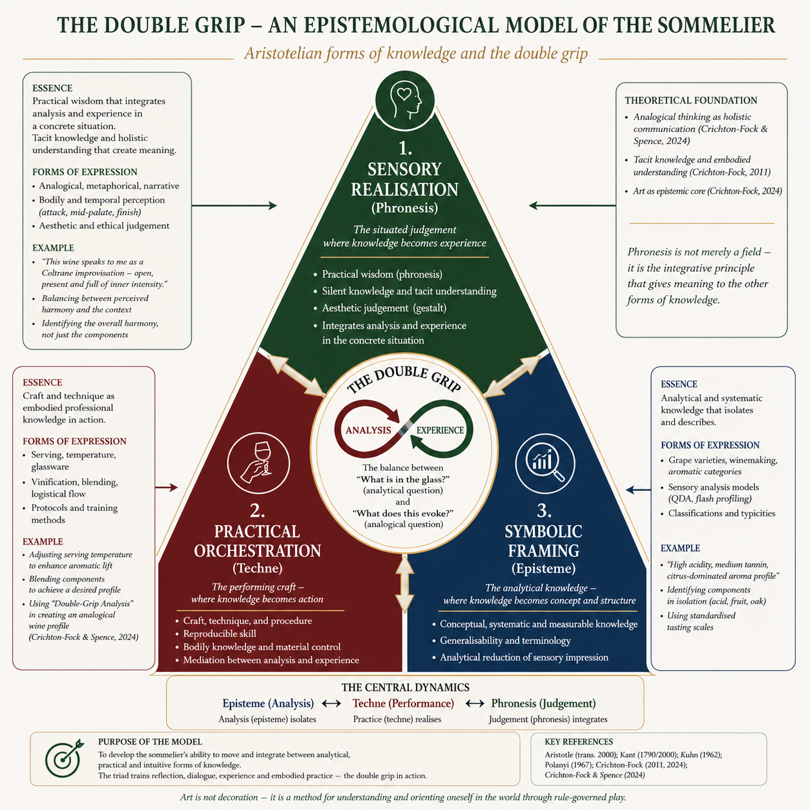
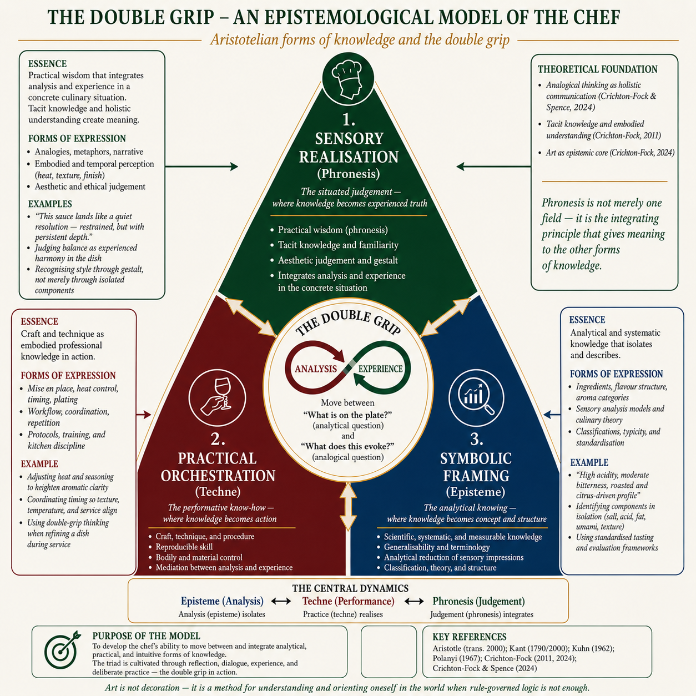
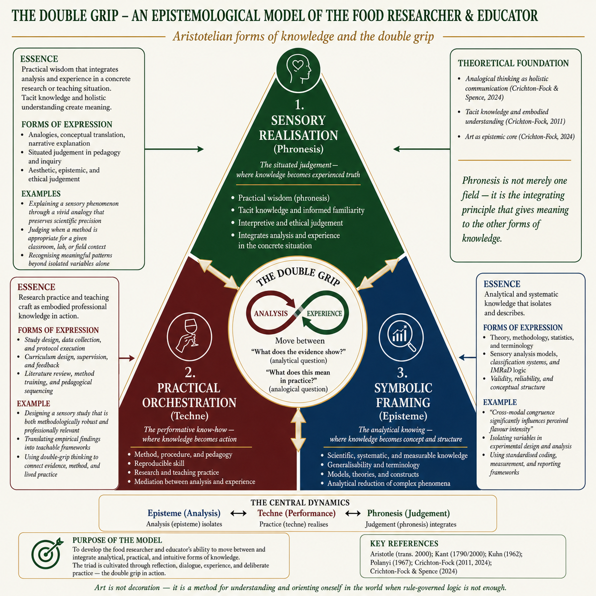
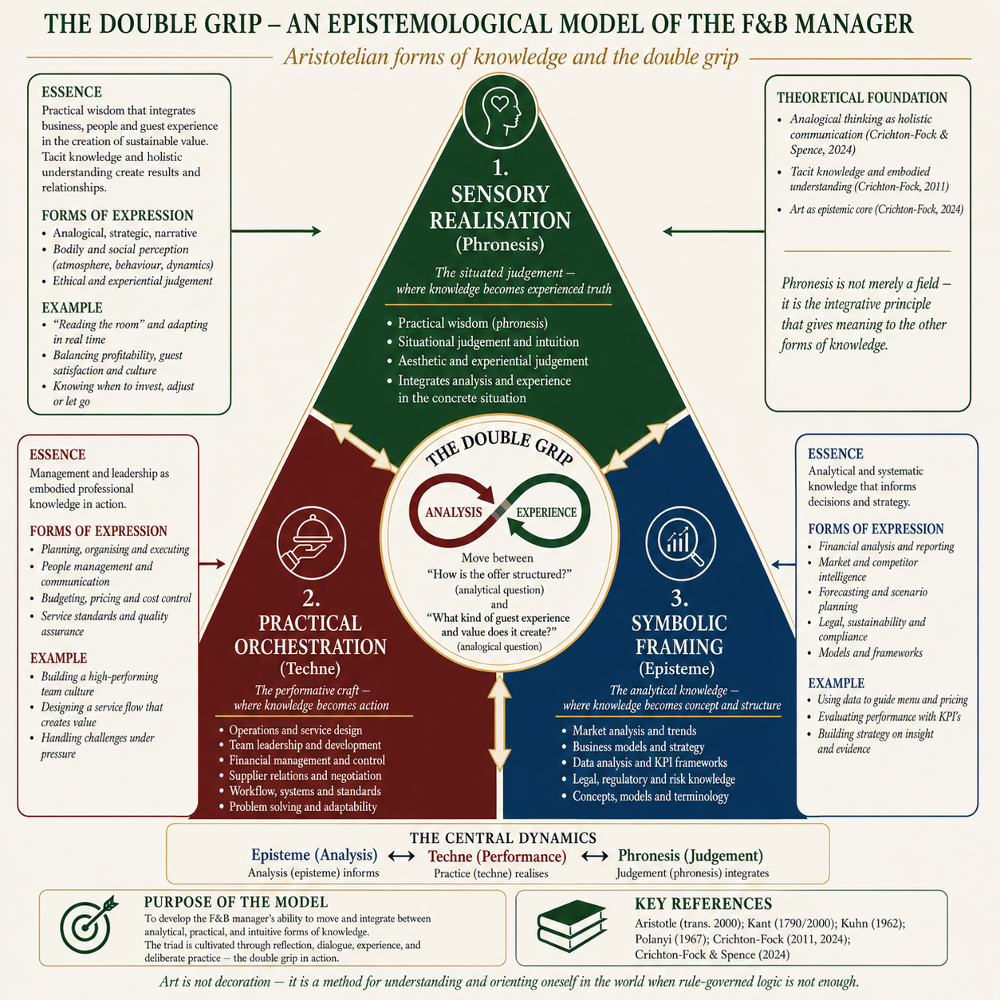
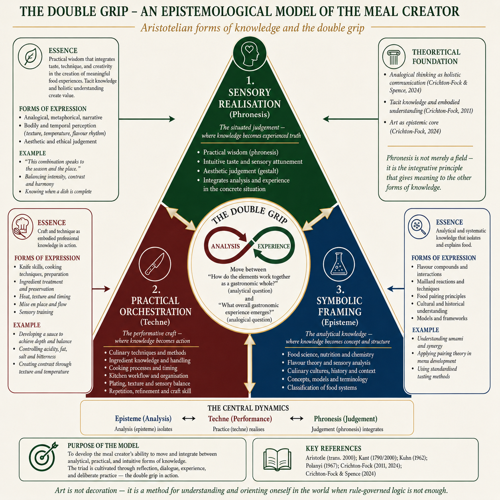

From Laozi to Crichton-Fock — the intellectual genealogy behind the TRIAD model: thinkers of knowledge and the artworks that disclosed rupture before science could codify it, woven together across two and a half millennia.
The Daodejing opens with the insight that the deepest reality resists being told — the Dao that can be spoken is not the eternal Dao. The oldest articulation of tacit knowing: the deepest understanding resists full articulation. Knowledge of practice — the cook's hand, the taster's discrimination — is shown, not stated. A founding intuition for techne and phronesis.
The wisdom of recognising the limits of one's own knowledge. The Socratic method — maieutics — does not transfer knowledge but draws it forth through dialogue. Professional knowledge is not received; it is generated through conscious questioning of practice. The beginning of all TRIAD thinking.
Antigone chooses the unwritten right over the written law — phronesis over episteme. The professional practitioner faces the same paradox: when the situation demands a decision that transcends the manual, written protocol, or established rule. Excellence requires the courage of situated judgment.
The origin. Aristotle distinguishes three irreducible forms of knowledge: Episteme (universal, demonstrable, scientific), Techne (productive craft, skill, repeatable), and Phronesis (practical wisdom, situational judgment, ethical). No single form is sufficient. Professional excellence requires all three — in dynamic tension.
Dante's cosmos, and Giotto's frescoes that accompanied his age, opened the flat hierarchies of medieval perception toward a decentred world — cultivating a sensibility to spatial relativity that later scientific work would articulate. An early example of how art and science illuminate the same shift in different registers.
The mind/body dualism that TRIAD overcomes. Descartes separates thinking from bodily experience — episteme from techne and phronesis. The TRIAD model insists they cannot be separated in professional practice: the sommelier's knowledge lives in the body, the hand, the nose, not only the mind.
The double grip in its purest form. The great actor must simultaneously feel and not feel — be inside the role and outside it, both technically precise and emotionally present. Diderot's paradox is the professional practitioner's paradox: the chef, the sommelier, the educator must be analytically rigorous and aesthetically responsive at the same moment. This is the origin of what Crichton-Fock develops as the double grip.
Aesthetic judgment is reflective, not determinative: beauty is not deduced from rules but compels us to imagine a common world — the sensus communis, a shared capacity for feeling. To judge beauty is already to imagine how another might see. Aesthetic experience becomes the very condition for moral reasoning.
Goethe's morphology and Romantic poetry rendered nature as process and flux — dramatising transformation and dynamic becoming, priming perception for a living, evolving world decades before Darwin gave it scientific form. The artist disclosed nature as becoming; science later codified it.
The founding text of gastronomy treats taste as a genuine form of knowledge — sensory, reflective, and cultural at once. What and how we eat reveals who we are. Eating is raised from appetite to discernment: the palate as an organ of judgment, the meal as a site of understanding. Gastronomy's own claim to the TRIAD.
Variation within species was observed long before Darwin, but it gained its full significance once evolution supplied the categories. The sensibility to nature as flux that Goethe and the Romantics had cultivated, and the scientific theory that followed, illuminate the same reality — perception and codification working together.
The hidden beneath the surface — what is unsaid drives action. Professional knowledge is never fully explicit. The practitioner reads what is not on the menu, hears what is not ordered, senses what the guest cannot articulate. Ibsen's theatre is a school of situated perception.
"Life imitates Art far more than Art imitates Life." Aesthetic sensibility as a form of knowledge — not decoration, not entertainment, but a distinct epistemic mode. For Wilde, the capacity to perceive beauty is cognitive, not merely emotional. Phronesis in the dining room is aesthetic judgment as much as ethical judgment.
Knowledge is constituted in and through practice — the pragmatic-constitutive position. Experience is not the application of prior knowledge; it is where knowledge is formed. Dewey's aesthetic theory insists that the experience of art — like the experience of a great meal — is a complete cognitive act, not a passive reception.
Cubism and relativity emerge simultaneously — multi-perspectival truth. The same object, seen from multiple simultaneous positions, reveals what no single perspective can. TRIAD is cubist epistemology: the same research article, translated into three simultaneous dimensions of professional knowledge, reveals what no single reading can.
"In most cases, the meaning of a word is its use." Knowledge does not exist prior to practice — it is constituted in the language games of a form of life. The sommelier's vocabulary is not a description of wine; it is the wine, for practical purposes. To change how professionals speak about their practice is to change the practice itself. The TRIAD model gives gastronomy a new language game.
Art offers insight not as syllogistic proof but as constellation — fragments aligning in nonlinear, affective recognition rather than rational sequence. Truth apprehended through pathos, not propositional logic. A theory of how the artwork knows: by configuration, not deduction.
For Weil, attention — complete, selfless, present — is the ethical core of phronesis; she held it to be among the rarest and purest forms of generosity. The practitioner who truly attends to the guest, the dish, the moment, is performing an ethical act, not merely a professional one. Excellence is attention.
"Can machines think?" Turing's question defines TRIAD's boundary. Machines can compute episteme — accumulate, pattern-match, and translate scientific knowledge. But phronesis — situated, embodied, ethical judgment in the unrepeatable moment — remains irreducibly human. Gusto Science uses AI to generate episteme and techne so practitioners can focus on what only they can do: phronesis.
"Ever tried. Ever failed. No matter. Try again. Fail again. Fail better." Techne is the practice of failing better — the craft that develops through repetition with reflection. Each service, each preparation, each evaluation is unique and unrepeatable (phronesis) but built on accumulated practice (techne). Beckett's absurdism is the phenomenology of professional development.
"We know more than we can tell." Tacit knowledge — the knowledge in the hands, the body, the trained perception — cannot be fully articulated. The master sommelier knows more than she can write down. The great chef does more than any recipe captures. Polanyi's insight grounds the phronesis dimension of TRIAD: some professional knowledge resists codification, but it can be cultivated through practice and reflection.
The distinction between "knowing how" and "knowing that" gave techne its modern philosophical ground. Practical competence is not failed theory or hidden propositions — it is a distinct form of knowledge, irreducible to rules. The cook knows how before, and beyond, knowing that.
Science advances not by proof but by falsification: a theory is scientific only if it can be refuted. Popper drew the boundary of episteme — its rigour and its limits — and set the stage for Kuhn's challenge. Together they frame the question of how the genuinely new enters knowledge at all.
Science advances not linearly but through paradigm shifts, as new frameworks reorganise what counts as knowledge. Kuhn's account opens a rich question: how the genuinely new first becomes perceptible. The TRIAD explores one answer — that art and science each contribute to seeing the new, one through sensibility, the other through codification. The double grip across history.
Artworks are not passive objects but world-making symbols: they classify and reclassify, recasting perception itself. A Duchamp readymade does not describe the world — it rearranges the coordinates of what counts as knowledge. Art is not commentary but cognition.
Wittgenstein's successor at Cambridge. Von Wright distinguishes causal explanation (episteme — the scientist's mode) from teleological understanding (phronesis — the practitioner's mode). Science explains; practice understands. The TRIAD model holds both: Episteme explains, Techne applies, Phronesis understands the whole in the moment of action.
Habitus — the body knows. Practice is not the execution of rules but the embodied disposition accumulated through experience. The professional practitioner does not consciously apply knowledge; she is that knowledge, in her body, her movements, her perceptions. Bourdieu's habitus is the sociological grounding of phronesis.
Knowing-in-action and reflection-in-action — the practitioner generates knowledge through practice, not before it. Schön's reflective practitioner is the archetype TRIAD aims to cultivate: a professional who can articulate, examine, and develop their tacit knowledge through conscious reflection. The TRIAD model is a tool for making reflection-in-action possible.
Expertise is not accelerated rule-following. From novice to master, the skilled practitioner moves beyond explicit rules into intuitive, situation-responsive judgment — precisely what algorithms cannot reproduce. Dreyfus gave techne its phenomenology, and named the limit of artificial reasoning decades early.
For Sennett, making is a form of thinking. He restores craftsmanship as a model of knowledge: the slow dialogue between hand and material through which skill, judgment, and ethics are formed together. The craftsman's knowing — embodied, developing, never fully articulable — is techne in its fullest contemporary defence.
Pure presence as artistic form — the body as the instrument of knowledge. Abramović's performance art is phronesis made visible: complete attention, complete presence, complete responsibility for the unrepeatable moment. The practitioner who achieves this in service, in the kitchen, in the classroom, achieves excellence.
Literature trains the moral imagination: through form, ambiguity, and narrative immersion we learn to perceive lives as lives, rather than as functions. The novel's knowledge is not propositional but cultivated — a felt understanding that a purely utilitarian framework erases. Art as a school for phronesis.
Knowledge is not representation but intra-action — a becoming-with that destabilises the subject–object binary. We do not stand outside what we know; we are implicated in it. A contemporary grounding for knowledge that is embodied, situated, and relational rather than detached.
Context as meaning. Banksy's art demonstrates that where knowledge appears transforms what it means. The same research finding, presented to a sommelier or a food scientist or a restaurateur, means something different — not because the science changes, but because the context of application transforms its meaning. The TRIAD model is a context engine: it makes the same episteme mean differently for different practitioners.
The double grip: where scientific rigour and aesthetic sensibility converge into professional mastery. Building on a licentiate in the aesthetics of sensory experience and a doctoral thesis on the double grip, Crichton-Fock applies Aristotle's three forms of knowledge to gastronomy as a living framework for teaching sommeliers and chefs. The practitioner who develops all three — who can read the science, execute the craft, and exercise situated judgment — achieves an excellence no single dimension alone can produce. Gusto Science is the infrastructure for this development.
The double grip is Crichton-Fock's central contribution: the insight that professional excellence in gastronomy requires holding scientific knowledge and aesthetic sensibility simultaneously — not alternating between them, but integrating them in the moment of practice.
"The great actor must feel the emotion fully and yet remain perfectly in control. He must be inside the role and outside it simultaneously."
— Denis Diderot, Paradoxe sur le comédien, c. 1773
Diderot's paradox, applied to gastronomy: the sommelier who pours with complete technical precision while remaining fully present to the guest's unspoken response. The chef who executes the recipe flawlessly while remaining responsive to the living ingredients. The educator who commands the research while remaining genuinely open to the student's emerging understanding.
"We know more than we can tell."
— Michael Polanyi, The Tacit Dimension, 1966
The double grip is what allows the practitioner to act on what they know but cannot fully articulate — to be guided by tacit knowledge while remaining accountable to explicit knowledge. This is the space TRIAD inhabits.
The TRIAD model is not an abstract philosophical framework — it is a practical tool for professional development in gastronomy. Developed by Anders Crichton-Fock at Örebro University, it applies Aristotle's three forms of knowledge to the lived reality of professional practice: the sommelier at the table, the chef at the pass, the educator in the classroom, the researcher at the bench.
The double grip — the simultaneous holding of scientific rigour and aesthetic sensibility — is the condition of excellence. Not scientific knowledge applied to practice, not aesthetic sensibility informed by science, but both at once: the unrepeatable moment in which the practitioner integrates what she knows, what she can do, and what the situation demands.
Gusto Science is the infrastructure for developing this capacity: a curated body of research, translated into three dimensions of professional knowledge and made available for every profession in gastronomy — so that the practitioner can build the knowledge base from which excellence can grow.





The three questions that Gusto Science asks of every paper — What the research found, What to do with it, When it applies — and when it doesn't — are readings of Aristotle's three forms of knowledge, translated for the working professional.
Aristotle. (trans. 2000). Nicomachean Ethics. (R. Crisp, Trans.). Cambridge University Press.
Beckett, S. (1983). Worstward Ho. Grove Press.
Bourdieu, P. (1980). The Logic of Practice. (R. Nice, Trans.). Stanford University Press.
Crichton-Fock, A. P. F. & Spence, C. (2024). The imitation game — exploring the double-grip analysis for creating analog wines. Journal of Wine Research, 35(2), 139–159.
Dewey, J. (1934). Art as Experience. Minton, Balch & Company.
Diderot, D. (1773/1957). The Paradox of the Actor. (W. H. Pollock, Trans.). Hill and Wang.
Herdenstam, A. P. F. (2004). Sinnesupplevelsens estetik: vinprovaren, i gränslandet mellan konsten och vetenskapen [Licentiate thesis]. Stockholm: KTH.
Herdenstam, A. P. F. (2011). Den arbetande gommen: vinprovarens dubbla grepp, från analys till upplevelse [Doctoral dissertation]. Stockholm: KTH.
Polanyi, M. (1966). The Tacit Dimension. Doubleday.
Schön, D. A. (1983). The Reflective Practitioner. Basic Books.
Turing, A. M. (1950). Computing machinery and intelligence. Mind, 59(236), 433–460.
von Wright, G. H. (1971). Explanation and Understanding. Cornell University Press.
Weil, S. (1947). Gravity and Grace. (E. Crawford, Trans.). Routledge.
Wittgenstein, L. (1953). Philosophical Investigations. (G. E. M. Anscombe, Trans.). Blackwell.
Research is undertaken to change the world. Yet too often it stays in the university, at a distance from the society it means to transform.
Citation counts and the h-index reward academic standing — not whether knowledge reaches the kitchen, the cellar, the dining room, or the producer, and changes how someone perceives, decides, and acts. This is not only a problem of communication. It is a problem of what we let count as knowledge.
Aristotle distinguished three forms of knowledge a reflective professional cannot do without:
The metrics see only the first. Techne — the reflective knowledge of practice — and phronesis — the situated judgment that discerns the right action when no rule suffices — are precisely the forms that resist measurement. As Polanyi observed, we know more than we can tell. The taster's discrimination, the cook's hand, the host's read of a room: real, transmissible knowledge to which the strict demands of reliability and validity simply do not apply — yet which is often what matters most in judgment, in action.
This is Diderot's double grip: one must feel in order to reason well. Art knows in this register — holistically, analogically, with the whole sensorium — disclosing the complex knowledge of wholes before science can codify it. And gastronomy is this knowledge at its limit. It is the one art that engages not only sight, sound, and texture, but smell and taste. Its knowing cannot be gathered from reading alone; it becomes only when all the senses are present together, in the act, judged as a whole.
The TRIAD is an infrastructure for that alignment. By reading research through episteme, techne, and phronesis for each profession, it creates contexts in which practitioners can take up important knowledge without it losing scientific dignity — and in which researchers can see the interdisciplinary connections that complex human situations demand. That is why the map of connections exists: not as ornament, but as an instrument for seeing where fields must meet.
A research database is only as trustworthy as the process that builds it. Gusto Science is curated through a transparent, multi-stage pipeline that favours depth over breadth — selecting research where food and drink are studied as human sensory, cultural and service experience, and setting aside work where food is merely incidental.
Articles are gathered from OpenAlex and PubMed — drawn from curated gastronomy and sensory-science journals and from targeted keyword searches.
Every article must carry a traceable source (a DOI) and pass a gastronomy-relevance filter before it enters the database.
Abstracts and metadata are retrieved and completed, so each article carries enough substance to be judged on its content.
Relevance is judged on content, not journal name. Keyword signals and AI context-analysis distinguish gastronomic research — taste, sensory science, service — from work where food is only mentioned in passing.
Qualified articles are read through the three epistemological lenses — Episteme, Techne, Phronesis — for each profession in gastronomy.
Gusto Science grows out of teaching practice at Campus Grythyttan, Örebro University, where the founder and colleagues work with Aristotle's forms of knowledge to teach sommeliers and chefs. Different kinds of knowledge call for different kinds of teaching — and for contexts in which each can take shape. A sommelier first learns the theory of viticulture, regions, and culture (episteme), then trains the craft of tasting, analysing, and describing (techne), and finally applies that knowledge in varied contexts to develop practical wisdom and judgment (phronesis).
The site was founded by Dr Anders Crichton-Fock — Senior Lecturer and researcher at the School of Hospitality, Culinary Arts and Meal Science (Campus Grythyttan), Örebro University, and one of the first two doctoral students when Meal Science was established there in the late 1990s. His earlier academic work, published under the name Herdenstam, includes a 2004 licentiate thesis on the aesthetics of sensory experience — the wine taster in the borderland between art and science — and a 2011 doctoral dissertation on the working palate and the wine taster's double grip, from analysis to experience, both from KTH Royal Institute of Technology. He was appointed Excellent Teacher in 2022, and is the originator of applied methods — the Double Grip Analysis, the Critical Attribute Technique, and the Dialogue Consensus Technique — in which art and science are used together to develop the three forms of knowledge and bring them closer to the practice where they are applied.
The site is not about any one person. This background is offered only so the connection between the framework and its origin can be understood.
Herdenstam, A. P. F. (2004). Sinnesupplevelsens estetik: vinprovaren, i gränslandet mellan konsten och vetenskapen [Licentiate thesis]. Stockholm: Kungliga Tekniska Högskolan (KTH). urn:nbn:se:oru:diva-9183
Herdenstam, A. P. F. (2011). Den arbetande gommen: vinprovarens dubbla grepp, från analys till upplevelse [Doctoral dissertation]. Stockholm: KTH Royal Institute of Technology.
Crichton-Fock, A. P. F. & Spence, C. (2024). The imitation game — exploring the double-grip analysis for creating analog wines. Journal of Wine Research, 35(2), 139–159.
The 2004 and 2011 theses were published under the name Herdenstam. ORCID: 0000-0003-3762-483X